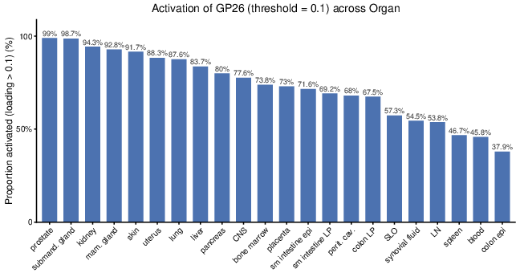
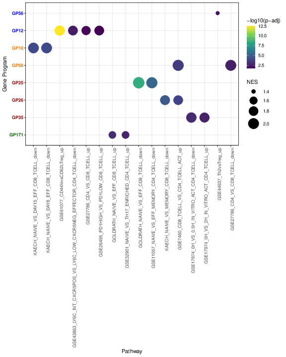
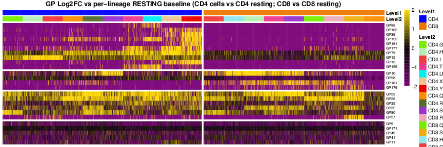
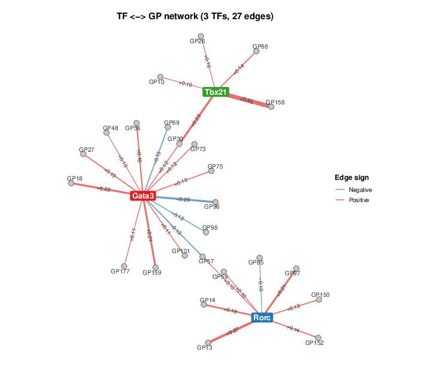

Figure S3: Characterizing activation GPs
Ziang Zhang
Last updated: 2026-07-02
Checks: 7 0
Knit directory:
immgenT-GP-analysis/analysis/
This reproducible R Markdown analysis was created with workflowr (version 1.7.2). The Checks tab describes the reproducibility checks that were applied when the results were created. The Past versions tab lists the development history.
Great! Since the R Markdown file has been committed to the Git repository, you know the exact version of the code that produced these results.
Great job! The global environment was empty. Objects defined in the global environment can affect the analysis in your R Markdown file in unknown ways. For reproduciblity it’s best to always run the code in an empty environment.
The command set.seed(1) was run prior to running the
code in the R Markdown file. Setting a seed ensures that any results
that rely on randomness, e.g. subsampling or permutations, are
reproducible.
Great job! Recording the operating system, R version, and package versions is critical for reproducibility.
Nice! There were no cached chunks for this analysis, so you can be confident that you successfully produced the results during this run.
Great job! Using relative paths to the files within your workflowr project makes it easier to run your code on other machines.
Great! You are using Git for version control. Tracking code development and connecting the code version to the results is critical for reproducibility.
The results in this page were generated with repository version 2b0e445. See the Past versions tab to see a history of the changes made to the R Markdown and HTML files.
Note that you need to be careful to ensure that all relevant files for
the analysis have been committed to Git prior to generating the results
(you can use wflow_publish or
wflow_git_commit). workflowr only checks the R Markdown
file, but you know if there are other scripts or data files that it
depends on. Below is the status of the Git repository when the results
were generated:
Ignored files:
Ignored: analysis/.DS_Store
Ignored: analysis/.Rhistory
Ignored: analysis/assets/.DS_Store
Ignored: code/.DS_Store
Ignored: code/.Rhistory
Ignored: data
Ignored: figures/final-selected/.DS_Store
Ignored: figures/final-selected/bits/.DS_Store
Ignored: figures/final-selected/bits/Figure 1/.DS_Store
Ignored: figures/final-selected/bits/Figure 2/.DS_Store
Ignored: figures/final-selected/bits/Figure 3/.DS_Store
Ignored: figures/final-selected/bits/Figure 4/.DS_Store
Ignored: figures/final-selected/bits/Figure 6/.DS_Store
Ignored: figures/final-selected/bits/Figure 7/.DS_Store
Ignored: figures/final-selected/bits/Figure S1/.DS_Store
Ignored: figures/final-selected/bits/Figure S2/.DS_Store
Ignored: figures/final-selected/bits/Figure S3/.DS_Store
Ignored: figures/final-selected/bits/Figure S6/.DS_Store
Ignored: figures/final-selected/bits/Figure S7/.DS_Store
Ignored: script/.DS_Store
Ignored: script/.Rhistory
Unstaged changes:
Modified: analysis/_site.yml
Note that any generated files, e.g. HTML, png, CSS, etc., are not included in this status report because it is ok for generated content to have uncommitted changes.
These are the previous versions of the repository in which changes were
made to the R Markdown (analysis/FigureS3.Rmd) and HTML
(docs/FigureS3.html) files. If you’ve configured a remote
Git repository (see ?wflow_git_remote), click on the
hyperlinks in the table below to view the files as they were in that
past version.
| File | Version | Author | Date | Message |
|---|---|---|---|---|
| Rmd | 2b0e445 | Ziang Zhang | 2026-07-02 | Fix GitHub source links to point at the new |
| html | cf1d0ac | Ziang Zhang | 2026-07-02 | Build site. |
| Rmd | 06b2461 | Ziang Zhang | 2026-07-02 | Initial commit: immgenT-GP-analysis |
| html | 06b2461 | Ziang Zhang | 2026-07-02 | Initial commit: immgenT-GP-analysis |
All panels are produced by script-refactor/FigureS3.R,
which shares its curated GP set with Figure 3
via code-refactor/R/activation_shared_setup.R. The code
below is shown for reference (not re-executed on this page); the images
are its pre-rendered output.
Setup
# Figure S3. Characterizing activation GPs.
#
# Panels produced (see figures/final-selected/bits/Figure S3/FigureS3_caption.md
# for the full caption text; captioned A-F there but the final files are
# lettered s3c-s3h -- this script uses that final lettering):
# s3c Fraction of cells per organ with GP26 loading > 0.2, sorted descending.
# s3d GSEA dot plot relating the activation GPs to curated gene sets.
# s3e Fraction of activated CD4 cells with GP79 loading > 0.1, by condition.
# s3f Per-cell log2FC heatmap of activation GPs vs resting baseline.
# s3g Fraction of activated CD8/CD4 cells with GP57 loading > 0.1: cancer
# vs all other conditions.
# s3h Bipartite TF-GP network for Gata3, Rorc, Tbx21.
#
# Source: ported from script/Figure_Activation.R (see Figure3.R for the main
# Figure 3 panels from the same file). Shared curated-GP setup lives in
# code-refactor/R/activation_shared_setup.R.
#
# Panel s3c has no corresponding block in the original script -- it is
# reconstructed here following the same per-organ threshold-rate pattern
# used for Figure 4b (script-refactor/Figure4.R), applied to GP26 at the
# caption's stated 0.2 threshold.
library(ggplot2)
library(ggrepel)
library(dplyr)
library(stringr)
library(pheatmap)
library(scales)
data_path <- "data/"
figure_path <- "figure-refactor/Figure S3/"
source("code-refactor/R/plot_utils.R") # scale_cols()
source("code-refactor/R/tf_network.R") # optimize_bipartite_order(), plot_tf_gp_network_v2()
# ============================================================
# Load data
# ============================================================
L_pm_filtered <- readRDS(paste0(data_path, "L_pm_filtered.rds"))
colnames(L_pm_filtered) <- paste0("GP", seq_len(ncol(L_pm_filtered)))
F_pm_filtered <- readRDS(paste0(data_path, "F_pm_filtered.rds"))
colnames(F_pm_filtered) <- paste0("GP", seq_len(ncol(F_pm_filtered)))
seurat_meta <- readRDS(paste0(data_path, "igt1_96_withtotalvi20260206_clean_ADTonly.Rds"))@meta.data
seurat_meta_filtered <- seurat_meta[rownames(L_pm_filtered), ]
df_sig <- read.csv(paste0(data_path, "GSEA_signatures_select_toplot.csv"), header = TRUE, sep = ",")
source("code-refactor/R/activation_shared_setup.R")(s3c) GP26+ rate by organ
# ============================================================
# s3c: Fraction of cells per organ with GP26 loading > 0.2
# (reconstructed -- see header note)
# ============================================================
gp26_organ_df <- data.frame(
organ = seurat_meta_filtered$organ_simplified,
gp26_high = L_pm_filtered[, "GP26"] > 0.2,
stringsAsFactors = FALSE
) %>%
filter(!is.na(organ), organ != "") %>%
group_by(organ) %>%
summarise(n_cells = n(), proportion_gp26_high = mean(gp26_high), .groups = "drop") %>%
arrange(desc(proportion_gp26_high)) %>%
mutate(organ = factor(organ, levels = organ))
p_s3c <- ggplot(gp26_organ_df, aes(x = organ, y = proportion_gp26_high)) +
geom_col(fill = "#4C72B0", color = "grey20", width = 0.7, linewidth = 0.2) +
scale_y_continuous(labels = scales::percent_format(accuracy = 1), expand = expansion(mult = c(0, 0.06))) +
labs(x = NULL, y = "Proportion of cells with GP26 > 0.2", title = "GP26+ rate by organ") +
theme_classic(base_size = 12) +
theme(axis.text.x = element_text(angle = 45, hjust = 1), plot.title = element_text(face = "bold", hjust = 0.5))
ggsave(filename = paste0(figure_path, "s3c.pdf"), plot = p_s3c, width = 6, height = 4.5)
| Version | Author | Date |
|---|---|---|
| 06b2461 | Ziang Zhang | 2026-07-02 |
Fig. S3c. Bar plot of the fraction of cells in each organ (organ_simplified) with GP26 loading above 0.2, sorted from highest to lowest.
(s3d) GSEA dot plot
# ============================================================
# s3d: GSEA dot plot for the activation GPs
# ============================================================
df_sig <- df_sig %>% mutate(factor = str_replace(factor, "^F", "GP"))
present_GPs <- intersect(ordered_GPs, unique(df_sig$factor))
y_levels <- rev(present_GPs) # first GP (GP56) appears at the top of the y-axis
df_plot <- df_sig %>%
filter(factor %in% present_GPs) %>%
mutate(pathway = factor(pathway, levels = unique(pathway)), factor = factor(factor, levels = y_levels), log10padj = -log10(padj))
y_factors <- levels(df_plot$factor)
y_colors <- highlight_colors[y_factors]
p_s3d <- ggplot(df_plot, aes(x = pathway, y = factor)) +
geom_point(aes(size = NES, color = log10padj)) +
scale_color_viridis_c(name = "-log10(p-adj)") +
scale_size(range = c(3, 10)) +
theme_bw() +
theme(axis.text.x = element_text(angle = 90, hjust = 1), axis.text.y = element_text(color = y_colors, face = "bold")) +
labs(size = "NES", x = "Pathway", y = "Gene Program")
ggsave(filename = paste0(figure_path, "s3d.pdf"), plot = p_s3d, width = 8, height = 10)
| Version | Author | Date |
|---|---|---|
| 06b2461 | Ziang Zhang | 2026-07-02 |
Fig. S3d. GSEA dot plot relating the activation GPs to curated immunologic signature gene sets. Each dot is a significant GP-gene-set association; color denotes -log10 adjusted p-value and size denotes the normalized enrichment score (NES). GP labels are colored by activation class.
(s3e) GP79+ rate across conditions
# ============================================================
# s3e: GP79 high-loading proportion across conditions, activated CD4 cells
# ============================================================
min_cells_gp79_condition <- 50
gp79_cd4_condition_df <- data.frame(
condition_broad = as.character(seurat_meta_filtered$condition_broad),
condition_detailed_simplified = as.character(seurat_meta_filtered$condition_detailed_simplified),
lineage = seurat_meta_filtered$annotation_level1,
activation_group = seurat_meta_filtered$annotation_level2_group,
gp79_loading = L_pm_filtered[, "GP79"],
stringsAsFactors = FALSE
) %>%
filter(lineage == "CD4", activation_group == "activated", !is.na(condition_detailed_simplified), condition_detailed_simplified != "") %>%
mutate(gp79_high = gp79_loading > 0.1)
gp79_cd4_condition_summary <- gp79_cd4_condition_df %>%
group_by(condition_detailed_simplified) %>%
summarise(
condition_broad = names(sort(table(condition_broad), decreasing = TRUE))[1],
n_cells = n(), n_gp79_high = sum(gp79_high), proportion_gp79_high = mean(gp79_high), .groups = "drop"
) %>%
mutate(included_in_plot = n_cells >= min_cells_gp79_condition) %>%
arrange(desc(proportion_gp79_high), condition_detailed_simplified)
gp79_cd4_condition_plot_df <- gp79_cd4_condition_summary %>%
filter(included_in_plot) %>%
arrange(proportion_gp79_high, condition_detailed_simplified) %>%
mutate(condition_label = factor(condition_detailed_simplified, levels = condition_detailed_simplified))
gp79_broad_levels <- sort(unique(gp79_cd4_condition_plot_df$condition_broad))
gp79_broad_colors <- setNames(scales::hue_pal()(length(gp79_broad_levels)), gp79_broad_levels)
gp79_xmax <- max(gp79_cd4_condition_plot_df$proportion_gp79_high, na.rm = TRUE)
gp79_xmax <- ifelse(gp79_xmax > 0, gp79_xmax, 0.05)
gp79_label_pad <- gp79_xmax * 0.015
gp79_plot_height <- max(7, 0.18 * nrow(gp79_cd4_condition_plot_df) + 2)
p_s3e <- ggplot(gp79_cd4_condition_plot_df, aes(x = proportion_gp79_high, y = condition_label, fill = condition_broad)) +
geom_col(width = 0.75, color = "grey25", linewidth = 0.2) +
geom_text(aes(x = proportion_gp79_high + gp79_label_pad, label = scales::percent(proportion_gp79_high, accuracy = 1)), hjust = 0, size = 2.7) +
scale_x_continuous(labels = scales::percent_format(accuracy = 10), expand = expansion(mult = c(0, 0.02))) +
scale_fill_manual(values = gp79_broad_colors) +
coord_cartesian(xlim = c(0, gp79_xmax * 1.15), clip = "off") +
labs(
x = "Proportion of activated CD4 cells with GP79 loading > 0.1", y = NULL, fill = "Condition broad",
title = "GP79-high fraction across activated CD4 conditions",
subtitle = paste0("condition_detailed_simplified categories with >= ", min_cells_gp79_condition, " activated CD4 cells")
) +
theme_classic(base_size = 11) +
theme(
legend.position = "right", legend.title = element_text(face = "bold"),
plot.title = element_text(face = "bold", hjust = 0.5), plot.subtitle = element_text(hjust = 0.5),
axis.text.y = element_text(size = 8), plot.margin = margin(10, 45, 10, 10)
)
ggsave(filename = paste0(figure_path, "s3e.pdf"), plot = p_s3e, width = 9, height = gp79_plot_height, limitsize = FALSE)
| Version | Author | Date |
|---|---|---|
| 06b2461 | Ziang Zhang | 2026-07-02 |
Fig. S3e. Bar plot of the fraction of activated CD4 cells with GP79 loading above 0.1, across condition categories (condition_detailed_simplified) that contain >= 50 activated CD4 cells, sorted from highest to lowest and colored by broad condition category.
(s3f) Per-cell log2FC heatmap
# ============================================================
# s3f: Per-cell log2FC heatmap of activation GPs (activated cells only),
# relative to each cell's own-lineage resting baseline
# ============================================================
L <- L_pm_filtered[c(CD4_cells, CD8_cells), GPs_of_interest, drop = FALSE]
cell_ids <- rownames(L)
cell_type <- seurat_meta_filtered$annotation_level2[match(cell_ids, seurat_meta_filtered$cellID)]
set.seed(123)
total_budget <- 8000
small_keep_all <- 150
min_per_cluster <- 150
max_per_cluster <- 600
cells_by_ct <- split(cell_ids, cell_type)
sizes <- sapply(cells_by_ct, length)
alloc <- ifelse(sizes <= small_keep_all, sizes, pmin(min_per_cluster, sizes))
remaining <- total_budget - sum(alloc)
if (remaining > 0) {
room <- pmax(pmin(sizes, max_per_cluster) - alloc, 0)
if (sum(room) > 0) {
extra <- floor(remaining * room / sum(room))
alloc <- alloc + extra
leftover <- total_budget - sum(alloc)
if (leftover > 0) {
idx <- order(room, decreasing = TRUE)
for (j in idx) {
if (leftover <= 0) break
addable <- pmin(room[j] - extra[j], leftover)
if (addable > 0) {
alloc[j] <- alloc[j] + addable
leftover <- leftover - addable
}
}
}
}
}
sampled_cells <- unlist(mapply(function(v, m) if (length(v) <= m) v else sample(v, m), cells_by_ct, pmin(alloc, sizes), SIMPLIFY = FALSE), use.names = FALSE)
cell_group_s <- seurat_meta_filtered$annotation_level2_group[match(sampled_cells, seurat_meta_filtered$cellID)]
cell_level2_s <- seurat_meta_filtered$annotation_level2[match(sampled_cells, seurat_meta_filtered$cellID)]
cell_group_s <- trimws(tolower(as.character(cell_group_s)))
cell_level2_s <- trimws(as.character(cell_level2_s))
cell_level1_s <- sapply(strsplit(cell_level2_s, "[_.]"), `[`, 1)
is_w_cell <- grepl("\\.w", cell_level2_s)
valid_idx <- which(!is.na(cell_level2_s) & !tolower(cell_level2_s) %in% c("", "na", "nan") & cell_group_s %in% c("resting", "activated") & !is_w_cell)
final_cells <- sampled_cells[valid_idx]
final_group <- cell_group_s[valid_idx]
final_level1 <- cell_level1_s[valid_idx]
final_level2 <- cell_level2_s[valid_idx]
col_order <- order(final_group, final_level1, final_level2)
final_cells <- final_cells[col_order]
final_group <- final_group[col_order]
final_level1 <- final_level1[col_order]
final_level2 <- final_level2[col_order]
pc <- 1e-10
cap <- 2
group_counts <- sapply(
list(
c("GP56", "GP162", "GP36", "GP152", "GP161", "GP177", "GP79", "GP12", "GP13", "GP159"),
c("GP10", "GP58", "GP181", "GP176"),
c("GP25", "GP26", "GP35", "GP32", "GP80", "GP57"),
c("GP9", "GP171", "GP49", "GP41", "GP11")
),
function(gp_group) sum(ordered_GPs %in% gp_group)
)
group_counts <- group_counts[group_counts > 0]
gaps_row <- cumsum(group_counts)[-length(group_counts)]
act_idx <- which(final_group == "activated")
act_cells <- final_cells[act_idx]
act_level1 <- final_level1[act_idx]
act_level2 <- final_level2[act_idx]
act_order <- order(act_level1, act_level2)
act_cells <- act_cells[act_order]
act_level1 <- act_level1[act_order]
act_level2 <- act_level2[act_order]
L_sub_act <- L[act_cells, , drop = FALSE]
M_raw_act <- t(L_sub_act)
# Per-lineage resting baseline: each activated cell's log2FC is computed
# against the mean loading in resting cells of its own lineage.
mu_resting_CD4 <- colMeans(L_pm_filtered[CD4_resting_cells, GPs_of_interest, drop = FALSE])
mu_resting_CD8 <- colMeans(L_pm_filtered[CD8_resting_cells, GPs_of_interest, drop = FALSE])
baseline_mat <- matrix(NA_real_, nrow = nrow(M_raw_act), ncol = ncol(M_raw_act))
rownames(baseline_mat) <- rownames(M_raw_act)
baseline_mat[, act_level1 == "CD4"] <- mu_resting_CD4[rownames(M_raw_act)]
baseline_mat[, act_level1 == "CD8"] <- mu_resting_CD8[rownames(M_raw_act)]
M_fc_act <- log2((M_raw_act + pc) / (baseline_mat + pc))
M_fc_act_cap <- pmax(pmin(M_fc_act, cap), -cap)
M_fc_act_cap <- M_fc_act_cap[ordered_GPs, , drop = FALSE]
ann_col_act <- data.frame(Level2 = factor(act_level2), Level1 = factor(act_level1))
rownames(ann_col_act) <- colnames(M_fc_act_cap)
present_level1_act <- levels(ann_col_act$Level1)
present_level2_act <- levels(ann_col_act$Level2)
level1_cols_act <- ZemmourLib::immgent_colors$level1
level1_cols_act <- level1_cols_act[names(level1_cols_act) %in% present_level1_act]
level2_cols_act <- ZemmourLib::immgent_colors$level2
level2_cols_act <- level2_cols_act[names(level2_cols_act) %in% present_level2_act]
missing_l2_act <- setdiff(present_level2_act, names(level2_cols_act))
if (length(missing_l2_act) > 0) {
level2_cols_act <- c(level2_cols_act, setNames(rep("grey80", length(missing_l2_act)), missing_l2_act))
}
ann_colors_act <- list(Level1 = level1_cols_act, Level2 = level2_cols_act)
rle_l1_act <- rle(as.character(ann_col_act$Level1))
gaps_col_act <- cumsum(rle_l1_act$lengths)
gaps_col_act <- gaps_col_act[-length(gaps_col_act)]
pheatmap(
M_fc_act_cap,
cluster_rows = FALSE, cluster_cols = FALSE,
gaps_row = gaps_row, gaps_col = gaps_col_act,
color = colorRampPalette(c("#7A0177", "black", "#FFD700"))(101),
breaks = seq(-cap, cap, length.out = 102),
show_colnames = FALSE, fontsize_row = 7, fontface_row = "bold", border_color = NA,
annotation_col = ann_col_act, annotation_colors = ann_colors_act, annotation_names_col = TRUE,
useRaster = TRUE,
main = "GP Log2FC vs per-lineage RESTING baseline (CD4 cells vs CD4 resting; CD8 vs CD8 resting)",
filename = paste0(figure_path, "s3f.pdf"),
width = 12, height = 4
)
| Version | Author | Date |
|---|---|---|
| 06b2461 | Ziang Zhang | 2026-07-02 |
Fig. S3f. Heatmap of per-cell log2 fold-change in GP loading relative to the resting baseline of the same lineage (each activated CD4 cell versus the CD4 resting mean; each activated CD8 cell versus the CD8 resting mean), capped at +-2. Rows are the activation GPs in semantic-group order; columns are individual activated cells grouped by sub-lineage (Level-2) within CD4 and CD8; color runs from purple (low) through black to gold (high).
(s3g) GP57+ rate, cancer vs. other conditions
# ============================================================
# s3g: GP57 high-loading proportion, cancer vs other conditions
# (activated CD4 and CD8)
# ============================================================
gp57_condition_df <- data.frame(
lineage = seurat_meta_filtered$annotation_level1,
activation_group = seurat_meta_filtered$annotation_level2_group,
condition_broad = as.character(seurat_meta_filtered$condition_broad),
gp57_loading = L_pm_filtered[, "GP57"],
stringsAsFactors = FALSE
) %>%
filter(lineage %in% c("CD8", "CD4"), activation_group == "activated") %>%
mutate(
lineage = factor(lineage, levels = c("CD8", "CD4")),
condition_group = if_else(condition_broad == "cancer", "Cancer", "Other conditions"),
condition_group = factor(condition_group, levels = c("Cancer", "Other conditions")),
gp57_high = gp57_loading > 0.1
)
gp57_condition_summary <- gp57_condition_df %>%
group_by(lineage, condition_group) %>%
summarise(n_cells = n(), n_gp57_high = sum(gp57_high), proportion_gp57_high = mean(gp57_high), .groups = "drop")
gp57_ymax <- max(gp57_condition_summary$proportion_gp57_high, na.rm = TRUE)
gp57_ymax <- ifelse(gp57_ymax > 0, gp57_ymax * 1.25, 0.05)
p_s3g <- ggplot(gp57_condition_summary, aes(x = lineage, y = proportion_gp57_high, fill = condition_group)) +
geom_col(position = position_dodge(width = 0.72), width = 0.62, color = "grey20", linewidth = 0.25) +
geom_text(
aes(label = paste0(scales::percent(proportion_gp57_high, accuracy = 0.1), "\n", n_gp57_high, "/", n_cells)),
position = position_dodge(width = 0.72), vjust = -0.25, size = 3.4, lineheight = 0.9
) +
scale_y_continuous(labels = scales::percent_format(accuracy = 1), limits = c(0, gp57_ymax), expand = expansion(mult = c(0, 0.04))) +
scale_fill_manual(values = c("Cancer" = "#C44E52", "Other conditions" = "#4C72B0")) +
labs(x = NULL, y = "Proportion of activated cells", fill = "Condition", title = "GP57 loading > 0.1 in activated CD8 and CD4 cells") +
theme_classic(base_size = 12) +
theme(legend.position = "top", legend.title = element_text(face = "bold"), axis.text.x = element_text(face = "bold"), plot.title = element_text(face = "bold", hjust = 0.5))
ggsave(filename = paste0(figure_path, "s3g.pdf"), plot = p_s3g, width = 5.4, height = 4.2)
| Version | Author | Date |
|---|---|---|
| 06b2461 | Ziang Zhang | 2026-07-02 |
Fig. S3g. Fraction of activated CD8 and CD4 cells with GP57 loading above 0.1, comparing cancer conditions against all other conditions combined; bar labels give the percentage and the underlying cell counts.
(s3h) TF-GP network for Gata3/Rorc/Tbx21
# ============================================================
# s3h: Bipartite TF-GP network for Gata3, Rorc, Tbx21
# ============================================================
tf_focus <- c("Gata3", "Rorc", "Tbx21")
tf_focus_threshold <- 0.1
tf_focus_edges <- do.call(rbind, lapply(tf_focus, function(tf_name) {
vals <- setNames(as.numeric(F_pm_filtered_norm[tf_name, ]), colnames(F_pm_filtered_norm))
idx <- which(is.finite(vals) & abs(vals) >= tf_focus_threshold)
data.frame(TF = tf_name, GP = names(vals)[idx], value = vals[idx], stringsAsFactors = FALSE)
})) %>%
mutate(
GP_number = as.numeric(sub("^GP", "", GP)),
edge_sign = if_else(value < 0, "Negative", "Positive"),
abs_value = abs(value),
edge_label = sprintf("%+.2f", value)
) %>%
arrange(match(TF, tf_focus), GP_number)
tf_focus_nodes <- data.frame(name = tf_focus, x = c(0, 2.7, 1.65), y = c(0, -2.75, 2.35), node_type = "TF", stringsAsFactors = FALSE)
tf_focus_colors <- c(Gata3 = "#E41A1C", Rorc = "#1F78B4", Tbx21 = "#33A02C")
gp_tf_membership <- tf_focus_edges %>%
group_by(GP) %>%
summarise(tf_members = list(sort(unique(TF))), degree_tf = n_distinct(TF), .groups = "drop")
shared_gp_nodes <- gp_tf_membership %>%
filter(degree_tf > 1) %>%
rowwise() %>%
mutate(
x = mean(tf_focus_nodes$x[match(tf_members, tf_focus_nodes$name)]),
y = mean(tf_focus_nodes$y[match(tf_members, tf_focus_nodes$name)])
) %>%
ungroup() %>%
transmute(name = GP, x, y, node_type = "GP")
tf_arc_range <- list(Gata3 = c(170, -105), Rorc = c(205, -20), Tbx21 = c(165, -15))
tf_arc_radius <- c(Gata3 = 1.65, Rorc = 1.35, Tbx21 = 1.30)
make_tf_arc_nodes <- function(tf_name, gp_names) {
if (length(gp_names) == 0) return(NULL)
center <- tf_focus_nodes[tf_focus_nodes$name == tf_name, ]
angles <- seq(tf_arc_range[[tf_name]][1], tf_arc_range[[tf_name]][2], length.out = length(gp_names)) * pi / 180
radius <- tf_arc_radius[[tf_name]]
data.frame(name = gp_names, x = center$x + radius * cos(angles), y = center$y + radius * sin(angles), node_type = "GP", stringsAsFactors = FALSE)
}
exclusive_gp_nodes <- do.call(rbind, lapply(tf_focus, function(tf_name) {
gp_names <- gp_tf_membership %>%
filter(degree_tf == 1, vapply(tf_members, identical, logical(1), tf_name)) %>%
pull(GP)
gp_names <- gp_names[order(as.numeric(sub("^GP", "", gp_names)))]
make_tf_arc_nodes(tf_name, gp_names)
}))
tf_focus_plot_nodes <- bind_rows(tf_focus_nodes, shared_gp_nodes, exclusive_gp_nodes)
tf_focus_plot_edges <- tf_focus_edges %>%
left_join(tf_focus_plot_nodes %>% select(name, x, y) %>% rename(x0 = x, y0 = y), by = c("TF" = "name")) %>%
left_join(tf_focus_plot_nodes %>% select(name, x, y) %>% rename(x1 = x, y1 = y), by = c("GP" = "name")) %>%
mutate(
label_x = x0 + 0.55 * (x1 - x0), label_y = y0 + 0.55 * (y1 - y0),
label_angle = atan2(y1 - y0, x1 - x0) * 180 / pi,
label_angle = case_when(label_angle > 90 ~ label_angle - 180, label_angle < -90 ~ label_angle + 180, TRUE ~ label_angle)
)
p_s3h <- ggplot() +
geom_segment(data = tf_focus_plot_edges, aes(x = x0, y = y0, xend = x1, yend = y1, color = edge_sign, linewidth = abs_value), alpha = 0.65, lineend = "round") +
geom_text(data = tf_focus_plot_edges, aes(x = label_x, y = label_y, label = edge_label, angle = label_angle), size = 3.0, color = "grey20") +
geom_point(data = tf_focus_plot_nodes %>% filter(node_type == "GP"), aes(x = x, y = y), shape = 21, size = 4.0, fill = "grey78", color = "grey45", stroke = 0.5) +
ggrepel::geom_text_repel(
data = tf_focus_plot_nodes %>% filter(node_type == "GP"), aes(x = x, y = y, label = name),
size = 3.4, color = "grey20", max.overlaps = Inf, min.segment.length = Inf, box.padding = 0.2, point.padding = 0.25
) +
geom_label(
data = tf_focus_plot_nodes %>% filter(node_type == "TF"), aes(x = x, y = y, label = name, fill = name),
color = "white", fontface = "bold", size = 4.6, label.padding = unit(0.22, "lines"), label.r = unit(0.16, "lines"), linewidth = 0, show.legend = FALSE
) +
scale_color_manual(values = c(Negative = "#2B6CB0", Positive = "#D62728"), name = "Edge sign") +
scale_fill_manual(values = tf_focus_colors) +
scale_linewidth_continuous(range = c(0.45, 3.2), guide = "none") +
coord_equal(clip = "off") +
labs(title = paste0("TF <-> GP network (", length(tf_focus), " TFs, ", nrow(tf_focus_edges), " edges)")) +
theme_void(base_size = 12) +
theme(plot.title = element_text(hjust = 0.5, face = "bold", size = 15), legend.position = "right", legend.title = element_text(face = "bold"), plot.margin = margin(15, 25, 15, 25))
ggsave(filename = paste0(figure_path, "s3h.pdf"), plot = p_s3h, width = 10, height = 8.5)
| Version | Author | Date |
|---|---|---|
| 06b2461 | Ziang Zhang | 2026-07-02 |
Fig. S3h. Bipartite transcription factor (TF)-GP network for the lineage-defining TFs Gata3, Rorc, and Tbx21. An edge connects a TF to a GP when the TF’s per-GP-normalized gene score has magnitude >= 0.1; edge color denotes sign (red, positive; blue, negative), width scales with magnitude, and labels give the signed score.
sessionInfo()R version 4.5.1 (2025-06-13)
Platform: aarch64-apple-darwin20
Running under: macOS Sequoia 15.6.1
Matrix products: default
BLAS: /System/Library/Frameworks/Accelerate.framework/Versions/A/Frameworks/vecLib.framework/Versions/A/libBLAS.dylib
LAPACK: /Library/Frameworks/R.framework/Versions/4.5-arm64/Resources/lib/libRlapack.dylib; LAPACK version 3.12.1
locale:
[1] en_CA/en_CA/en_CA/C/en_CA/en_CA
time zone: Asia/Tokyo
tzcode source: internal
attached base packages:
[1] stats graphics grDevices utils datasets methods base
loaded via a namespace (and not attached):
[1] vctrs_0.7.3 cli_3.6.6 knitr_1.50 rlang_1.2.0
[5] xfun_0.55 stringi_1.8.7 otel_0.2.0 promises_1.5.0
[9] jsonlite_2.0.0 workflowr_1.7.2 glue_1.8.1 rprojroot_2.1.1
[13] git2r_0.36.2 htmltools_0.5.9 httpuv_1.6.16 sass_0.4.10
[17] rmarkdown_2.30 evaluate_1.0.5 jquerylib_0.1.4 tibble_3.3.0
[21] fastmap_1.2.0 yaml_2.3.12 lifecycle_1.0.5 whisker_0.4.1
[25] stringr_1.6.0 compiler_4.5.1 fs_1.6.6 Rcpp_1.1.1-1.1
[29] pkgconfig_2.0.3 later_1.4.4 digest_0.6.39 R6_2.6.1
[33] pillar_1.11.1 magrittr_2.0.5 bslib_0.9.0 tools_4.5.1
[37] cachem_1.1.0